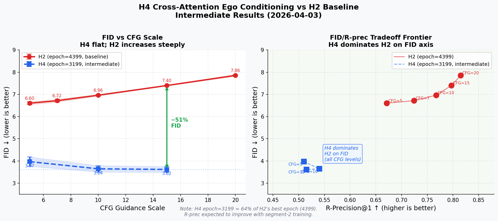

H4 (cross-attention, 196 K/V tokens): FID = 3.617–3.968 across all CFG levels.
H2 (pooled single token): FID = 6.603–7.400 (steep increase with CFG).
H4 is 40–51% better on FID at equivalent CFG levels, even at only 64% of H2's training.
| Model | Epoch | CFG | FID ↓ | FID CI | R-prec@1 ↑ | MultiMod ↑ | Note |
|---|---|---|---|---|---|---|---|
| H4 (trans_dec) | 3199 | 5 | 3.968 | ±0.209 | 0.510 | 4.117 | intermediate |
| H4 (trans_dec) | 3199 | 10 | 3.644 | ±0.145 | 0.540 | 3.936 | intermediate |
| H4 (trans_dec) | 3199 | 15 | 3.617 | ±0.131 | 0.515 | 3.938 | intermediate |
| H2 (baseline) | 4399 | 5 | 6.603 | ±0.067 | 0.671 | 3.503 | best epoch |
| H2 (baseline) | 4399 | 10 | 6.963 | ±0.035 | 0.767 | — | best epoch |
| H2 (baseline) | 4399 | 15 | 7.400 | ±0.016 | 0.797 | — | best epoch |
